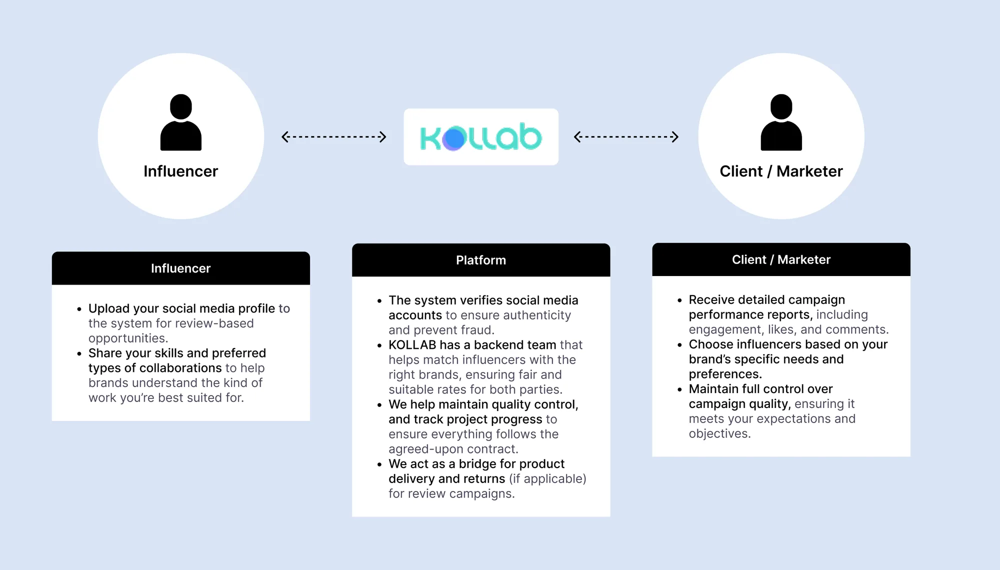
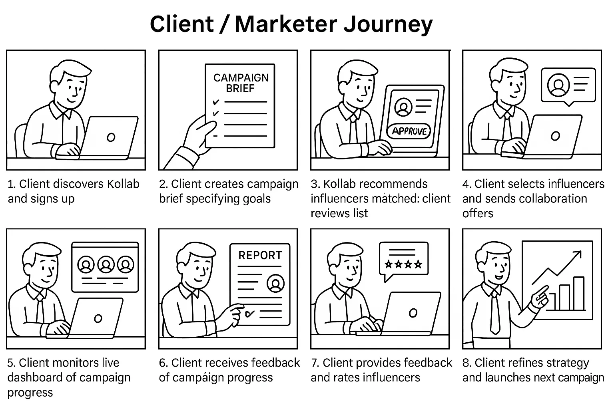
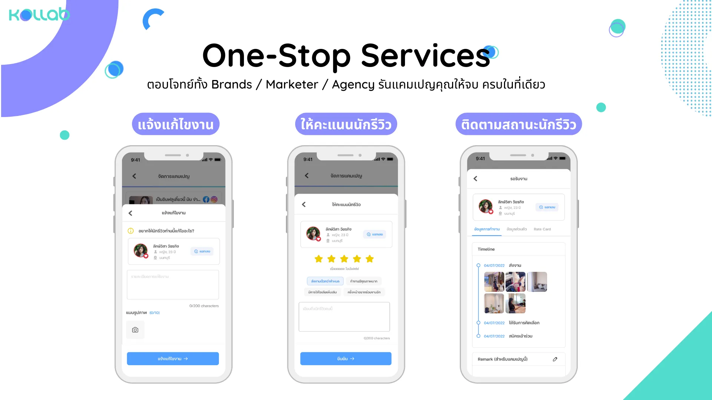

Kollab - แพลตฟอร์ม Influencer
สะพานเชื่อม influencer กับแบรนด์ ให้การทำงานร่วมกันลื่นไหลขึ้น

| ลูกค้า | ประเภทงาน | ช่วงเวลา | งานที่ทำ |
|---|---|---|---|
| Kollab | เว็บแอป | พ.ค. 2022 - ส.ค. 2022 | เว็บแอป |
ภาพรวมโปรเจกต์

KOLLAB คือแพลตฟอร์มแบบ “all-in-one” ที่เป็นสะพานเชื่อม influencer กับแบรนด์ ช่วยให้การทำงานร่วมกันเป็นระบบ มีประสิทธิภาพ และสะดวกขึ้น
KOL ย่อมาจาก Key Opinion Leader หรือที่เรียกกันว่า influencer ซึ่งเป็นบทบาทที่สำคัญขึ้นเรื่อยๆ ในการตลาดยุคใหม่
จากการรวม KOL มาร่วมงานกับแบรนด์ KOLLAB จึงเกิดขึ้น
KOLLAB เชื่อในพลังของคอมมูนิตี้ คือพลังที่เกิดจากการรวมตัวกันของ KOL และ influencer
เราเชื่อว่าเสียงที่หลากหลายและการเข้าถึงผู้คนของหลายๆ คนและหลายๆ กลุ่ม จะยกระดับการตลาดยุคใหม่ พาไปสู่ความสำเร็จ และเปิดโอกาสให้เติบโตต่อไปได้ไกลกว่าที่เป็นอยู่ทุกวันนี้
.webp)
ผู้เกี่ยวข้องหลัก
ลูกค้า / นักการตลาด
- กำหนดเป้าหมายของแบรนด์และวัตถุประสงค์ของแคมเปญ
- เลือก influencer ตามกลุ่มเป้าหมาย สไตล์ และความเกี่ยวข้องกับแบรนด์
- ติดตามผลแคมเปญผ่าน analytics (engagement, ยอดไลก์, คอมเมนต์)
- คุมคุณภาพแคมเปญ และดูให้ตรงกับมาตรฐานของแบรนด์
Kollab (แพลตฟอร์ม)
- ตรวจสอบบัญชีโซเชียลของ influencer ว่าเป็นของจริง และป้องกันการโกง
- จับคู่ influencer กับแบรนด์ที่เหมาะสม โดยใช้ระบบหลังบ้านและ insight จากข้อมูล
- ดูแลความคืบหน้าและคุมคุณภาพตลอดแคมเปญ
- ช่วยจัดการการส่งสินค้าและการคืนสินค้า (สำหรับแคมเปญรีวิว)
- เป็นตัวกลางสื่อสารระหว่าง influencer กับลูกค้า
Influencer
- อัปโหลดโปรไฟล์โซเชียลและผลงานขึ้นแพลตฟอร์ม
- บอกทักษะและรูปแบบการร่วมงานที่ถนัด เพื่อให้ได้แคมเปญที่เหมาะกับตัวเอง
- สร้างคอนเทนต์ตามบรีฟและไทม์ไลน์ที่ตกลงกันไว้
- มีปฏิสัมพันธ์กับผู้ติดตาม และรีวิวหรือโปรโมตอย่างจริงใจ
- สร้างความน่าเชื่อถือ และได้โอกาสรับแคมเปญจากผลงานที่ผ่านมา



ทำไมต้อง KOLLAB?
- Influencer → KOLLAB มีเครือข่าย influencer บนแพลตฟอร์มมากกว่า 150,000 คน
- แพลตฟอร์ม → ระบบ workflow ทันสมัย ใช้เทคโนโลยีและระบบอัตโนมัติช่วยให้ทำงานได้มีประสิทธิภาพขึ้น
- One-stop → เราดูแลแคมเปญครบตั้งแต่ต้นจนจบ มีขั้นตอนชัดเจน และมีทีมซัพพอร์ตคอยช่วยทุกขั้นตอน
.webp)
ฟีเจอร์ของเรา
สร้างแคมเปญได้ตามต้องการ ยืดหยุ่น
KOLLAB เข้าใจว่าแต่ละแบรนด์มีความต้องการไม่เหมือนกัน คุณจึงเลือกได้ว่าจะใช้แพ็กเกจสำเร็จรูป หรือสร้างแคมเปญเองทั้งหมด คุมงบได้เต็มที่ ไม่มีค่าใช้จ่ายแอบแฝง
ตอบโจทย์ทุกความต้องการ
เห็นภาพรวมของ influencer ที่คุณสนใจหรือเลือกไว้อย่างชัดเจน เพื่อให้ได้คนที่เหมาะกับแบรนด์ที่สุด แพลตฟอร์มของเรามีฟังก์ชัน Influencer Rate Card ให้คุณเปรียบเทียบและเลือกคนที่ใช่ก่อนเริ่มแคมเปญ


UI Concept